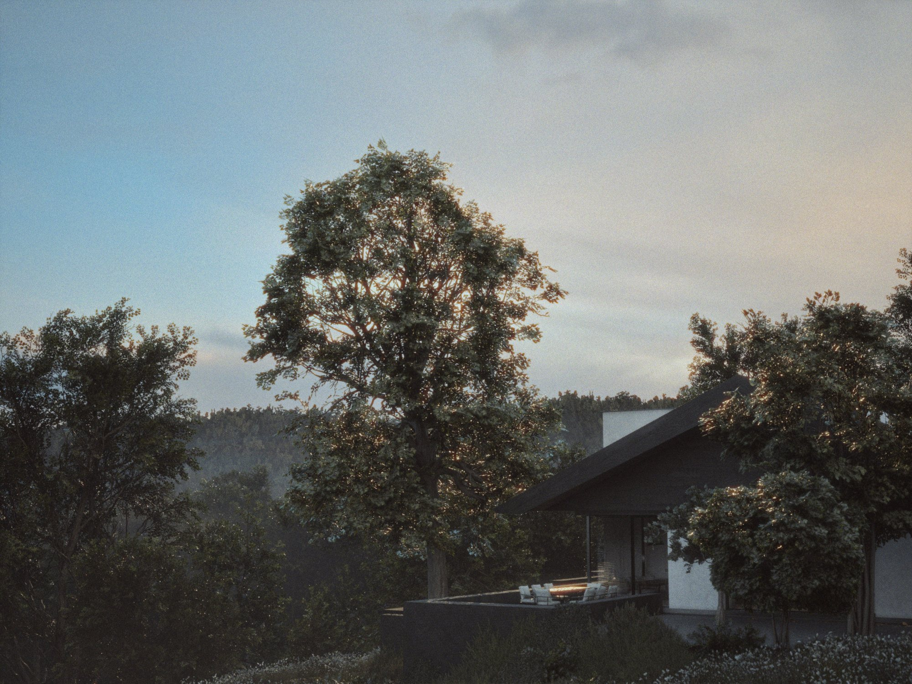

Sand & Concrete, Santa Monica
Unreal Engine 5.7 · 1 min 34 s · 3840 × 2160, 24 fpsShot list Click a shot to jump to it

I set up and animate cameras in Unreal Sequencer, light and render the shots, and cut them into finished films. I also build game-ready props, from sculpt to PBR textures.
Two films made entirely in Unreal Engine 5. I set up and animated every camera in Sequencer, lit every shot and rendered it through Movie Render Queue, and edited and graded both films in DaVinci Resolve. The camera stays slow and deliberate: dollies, tracks, crane moves, reveals and composed frames, with subtle handheld shake on selected shots.
Props built through the full real-time pipeline: high poly, retopology, baking and physically based texturing.
Modeled, retopologized, baked and textured to first-person standards: clean topology, deliberate UV packing and physically based materials authored in Substance Painter.
ZBrush sculpting and Substance Painter texturing.
I’m a 3D artist in Barcelona working in Unreal Engine 5: camera, lighting and edit for cinematic films, and game-ready assets from sculpt to PBR.
I came to 3D from architectural technology. I studied it at George Brown College in Toronto, then spent three years at Urbis Engineering drafting buildings in Revit and modeling them in Rhino, so reading drawings and getting scale right comes naturally.
At Design Center in Yerevan I was the main 3D artist on interior projects, from quick client reviews to final renders and VR walkthroughs in Unreal Engine. Since 2025 I’ve worked freelance for international clients.
Architectural Technology, Ontario College Advanced Diploma (3 years), George Brown College, 2021.
English (fluent), Armenian (native), Spanish (intermediate).